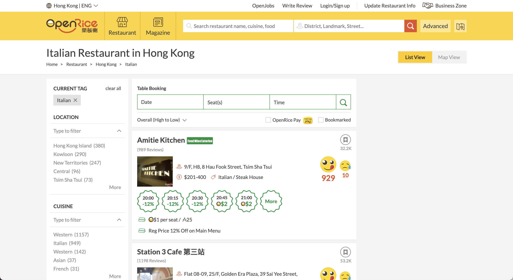

MAMMA MIA! MORE PASTA!
Today, I'm gonna find out the exact restaurant with the most types of pasta in Hong Kong! All hail the pasta!
Introduction
Do you know pasta?
Yes, of course you do.
What about Ravioli, Fusilli, and Orecchiette then?
Well, It might be a little tricky here.
As a fanatic of Italian food, I don't like pizza, espresso (coffee), or gelato (ice cream). Instead, I'm crazy about pasta. There are about 200 types of them, with unique geometry and history.
So, here comes the question. What is the exact Italian restaurant in Hong Kong, that provides the most types of Pasta?
Procedure
Our web scraping target is OpenRice. There are about 949 Italian restaurants marked on the food guide website. Get the title and some supplementary information. Then, click into the restaurant page and get the menu. Simple and clear as it sounds.
Unfortunately, as I was planning to acquire all of them, Parsehub has the quota of only 200 pages. Also, I have to click into the restaurant page, and then the menu page. So, there are far fewer restaurants to get. Finally, I got 96 restaurants. Not so bad, and not so good.

Data cleaning is really a tortue. The original data is a complete mess. OpenRefine is not enough, and I have to use Python to organize the menus, using the for loop and find function to count the pasta types for each restaurant. Then the final csv file is exported with Python.
Data analysis is quite easier. I rank these restaurants by pasta types, and also count them separately by the number of types.
The result, however, is a bit astonishing.
Result
What on earth that 4 is the largest number for these restaurants?

It is true that many of these restaurants only have menu photos, which is marked as -1 by me. This, of course, can be further tackled by OCR (Optical character recognition), which I don't have time to do right now. However, I have checked these pictures, and the pasta types are also scarce. Also, Text menu for online websites is not hard to do. Why don't they update the menu? I checked Yelp, which is a United States food guide website, and most of the restaurants have text menus.
Findings: There are Too few pasta types. Most of the restaurants have no text menus.
Improvements: Use OCR technique to deal with these images.
Suggestions: I might give Plato Cafe & Bistro and Hami Harmony a try.